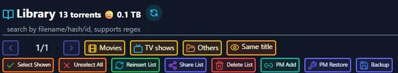

Что такое DMM и как им пользоваться?
Debrid Media Manager (DMM) — это бесплатный сайт, на котором можно найти фильмы и сериалы и добавить их в ваш аккаунт debrid: Real-Debrid, AllDebrid, TorBox, Premiumize, Offcloud или Debrid-Link. Вы входите в этот аккаунт, ищете название и нажимаете Instant RD (или кнопку вашего сервиса) у нужного релиза. Он сразу появится в вашей библиотеке и будет готов к просмотру прямо в DMM, в Stremio или Kodi, либо в Plex через zurg.
DMM имеет открытый исходный код и не входит в состав Real-Debrid или других сервисов. Файлы хранятся в вашем debrid-сервисе.
Вход
- Откройте debridmediamanager.com и нажмите на свой сервис: Login with Real Debrid, Login with AllDebrid, Login with Torbox, Login with Premiumize, Login with Offcloud или Login with Debrid-Link.
- Для Real-Debrid нажмите Sign in with Real-Debrid. DMM покажет код: нажмите Open real-debrid.com/device, введите код там и подтвердите. Страница DMM завершит вход сама. Также можно вставить свой API-токен в поле or paste an API key и нажать Save API Key.
- Для других сервисов следуйте их странице входа. Если там просят API-ключ, скопируйте его из своего аккаунта на этом сервисе, вставьте и нажмите Save API Key.

Есть ещё один сервис? Откройте Debrid services на главной странице DMM и нажмите его кнопку Login, например AllDebrid Login.
Есть только Easynews? Нажмите Login with Easynews. Искать в Easynews и отправлять в Stremio можно, но для библиотеки нужен аккаунт debrid. Спонсоры также могут войти через Login with DMM key.
Поиск фильма или сериала
- Введите название в поле Search movies & shows... на главной странице. Выберите вариант из подсказок или нажмите Search, чтобы увидеть полный список.
- Нажмите на постер. На странице фильма или сериала показаны релизы, которые нашёл DMM.
- Нажмите на чип вашего сервиса над результатами (RD, PM и так далее), чтобы увидеть только релизы, которые уже есть у него.

Что означают кнопки у релиза

Вкладка Usenet рядом с Torrents показывает Usenet-релизы того же тайтла. NZB скачивает один из них. Чтобы отправить их в библиотеку, нужен Real-Debrid или TorBox. Есть Easynews? Добавьте его в Settings, и он тоже будет искаться здесь.
Твоя библиотека
Нажмите Library на главной странице. Там показан весь список из аккаунтов, под которыми вы вошли: название, размер, статус и дата добавления.

- Ищите через search by filename/hash/id, supports regex или сузьте список кнопками Movies, TV shows и Others.
- Нажмите на строку, чтобы открыть её подробности и кнопки Hashlist, Delete, Cast и Copy. Значки в конце каждой строки делают то же самое.
- Backup сохраняет ваш список в файл
.dmm.json. RD Restore (PM Restore и так далее) возвращает сохранённый список обратно. - Share List превращает показанное или выбранное в hash list, которым другие люди могут добавить этот контент в свои аккаунты.
- Delete List удаляет всё показанное после подтверждения Yes, delete!. Сначала выполните поиск или выберите нужные элементы.
Куда дальше
- DMM в Stremio: смотрите то, что нашли в Stremio, с помощью аддона DMM Cast.
- Списки хешей: добавьте в свою библиотеку целую общую коллекцию или поделитесь своей.
- TorBox в DMM: какой тариф TorBox что даёт в DMM и как отправлять Usenet-релизы на TorBox Pro.
- "Torrent is being downloaded to debrid": что означает этот экран в Stremio и как DMM показывает, что уже закэшировано.
- Кнопки DMM в Safari: расширение для браузера добавляет кнопку DMM на IMDb, Trakt и другие сайты с фильмами и сериалами.
DMM также помогает другим проектам:
- zurg спрашивает у DMM, какой фильм или эпизод соответствует каждому файлу. Спонсор получает ключ API DMM в gatekeeper. Без него zurg опирается на имена файлов, и совпадает меньше названий. rex with zurg объясняет разницу.
- Sonarr Radarr и Prowlarr могут искать в DMM как торрент-индексатор Torznab или Usenet-индексатор Newznab. Для обоих нужны активное спонсорство и ключ API DMM. Настройте их на страницах Torznab и Newznab.
- Ваш список желаемого: нажмите Want или подпишитесь на список Trakt или MDBList. zurg будет забирать его и новые эпизоды по мере выхода. Требуется спонсорство. См. список желаемого DMM.
- Seerr Overseerr и Jellyseerr могут использовать DMM вместо Radarr и Sonarr. Запросы тогда попадают в ваш список желаемого, и zurg их загружает. Требуется спонсорство. См. Seerr через DMM.
- rex-direct даёт зарегистрированному rex собственный адрес и сертификат. См. rex-direct.
Всё, что открывает спонсорство, и где что настраивается, описано на странице What a sponsorship gives you.
Если что-то не работает
Застряли? Спросите на форуме dmm-support в Discord. В Getting help описано, что нужно указать.
Вопросы
Что такое DMM на самом деле?
Поисковый сайт для вашего аккаунта в дебрид-сервисе. Он находит релизы фильма или сериала, показывает, какие из них уже есть в вашем сервисе, и добавляет выбранный вами в аккаунт. Сам DMM никакие файлы не хранит.
Как им пользоваться?
Войдите в свой debrid-сервис, найдите тайтл, откройте его и нажмите Instant RD (или кнопку Instant вашего сервиса) у нужного релиза. Затем нажмите Watch, отправьте в Stremio или дайте zurg добавить его в Plex.
DMM делает Real-Debrid?
Нет. DMM — это проект с открытым исходным кодом, который работает с Real-Debrid и пятью другими сервисами. Люди часто ищут его как «Real-Debrid Media Manager».
Это бесплатно?
Да. Нужен свой аккаунт debrid, это платный сервис. Спонсорство DMM добавляет дополнительные возможности, например список желаемого и индексаторы: см. Что даёт спонсорство.
Какие сервисы работают?
Real-Debrid, AllDebrid, TorBox (платные тарифы), Premiumize, Offcloud и Debrid-Link. Easynews подходит для поиска и трансляции, но не для библиотеки.